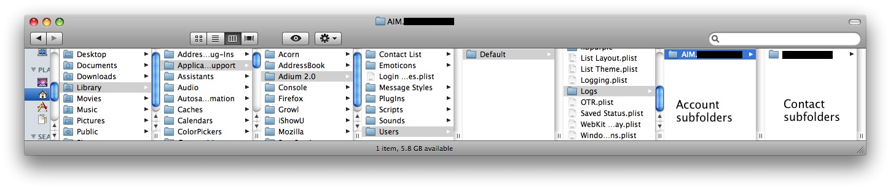

Recovering deleted transcripts
First: Don't panic!
The Delete button just moves the transcripts to the Trash, so look there first. You may still have them.
If you still have the transcripts in your Trash
Move them to your Logs folder:
- Press ⇧⌘H. This opens your Home folder.
- Navigate to Library/Application Support/Adium 2.0/Users/Default/Logs.
- The contents of that folder are subfolders, one per account; the contents of each subfolder are more subfolders, one per contact. So, for example, if your AIM username is jdoe and you have a contact named jsmith, the logs folder will contain a folder named “AIM.jdoe” that contains a subfolder named “jsmith”.
- Move each chatlog file from the Trash to the appropriate subfolder of the Logs folder. (It is important that you put it in the right folder. Otherwise, Adium won't be able to find those transcripts correctly in the Transcript Viewer window.)

If you don't still have the transcripts in your Trash
This procedure requires that you be running Mac OS X Leopard, and that you have Time Machine enabled and at least one backup from before the deletion.
- Press ⇧⌘H. This opens your Home folder.
- Navigate to Library/Application Support/Adium 2.0/Users/Default/Logs.
- Launch Time Machine. By default, it's in your Dock. If you removed it from your Dock, you can still access it using Spotlight (at the far right end of the menu bar).
- Go back in time and recover the missing files.
Also see Backing up Adium.